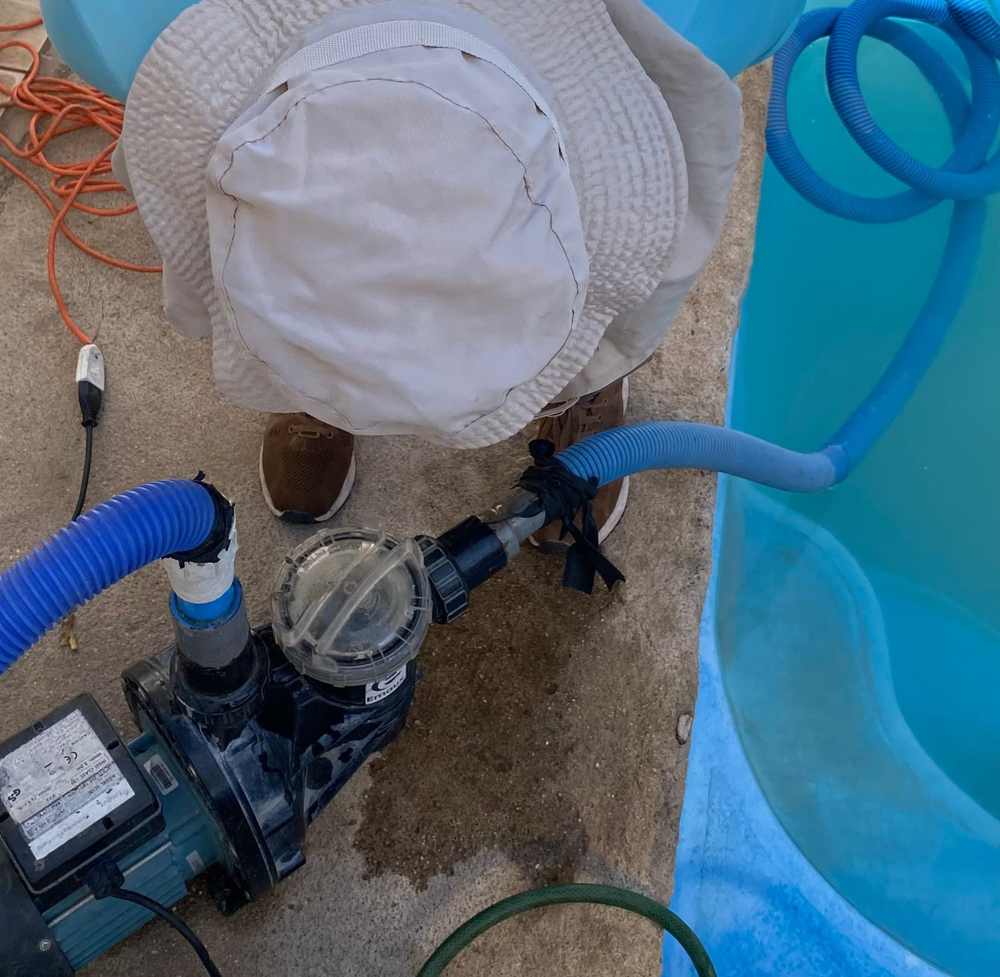
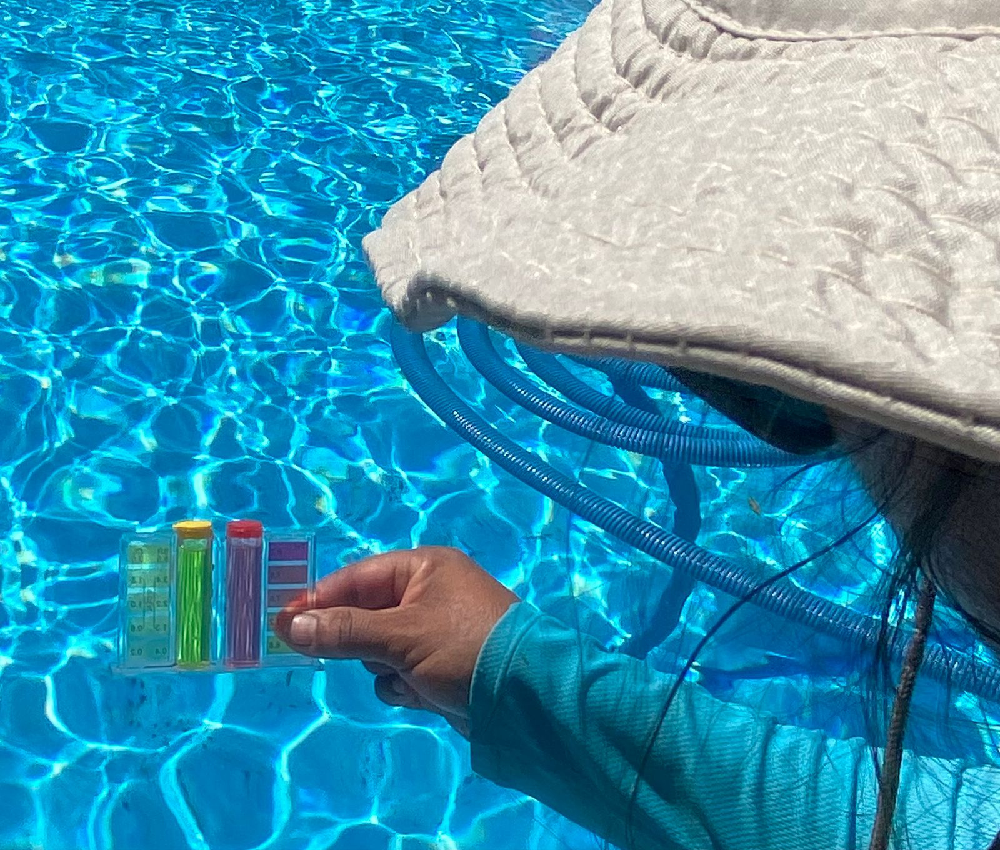
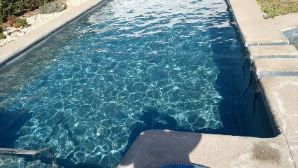
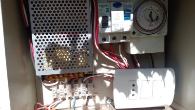
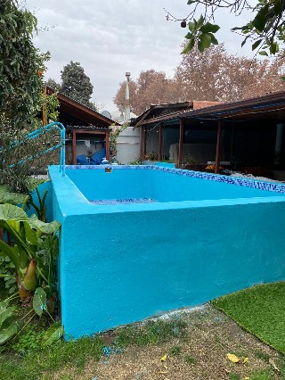
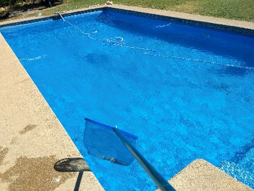

Mantención de bombas
Revisión y mantención de equipos de filtración.
Somos Aqua CIT Piscinas, un emprendimiento de Los Andes con más de 15 años de experiencia en mantención y recuperación de piscinas, nuestra principal especialidad.
Nos dedicamos a mantener las piscinas limpias, saludables y en óptimas condiciones, ofreciendo servicios de mantención, recuperación de aguas, limpieza y reparaciones.
Además, contamos con venta de productos y accesorios para el cuidado de piscinas, entregando una atención cercana, responsable y personalizada.
Nuestra experiencia y compromiso nos permiten brindar confianza y soluciones a cada cliente.
Nos comprometemos a brindar un servicio responsable, cercano y de calidad. Cuidamos cada detalle, desde el análisis del agua hasta la mantención de las piscinas, ofreciendo asesoría personalizada y soluciones adaptadas a las necesidades de nuestros clientes.

Fotografías reales de trabajos de Aqua CIT Piscinas.

Revisión y mantención de equipos de filtración.

Cuidado y limpieza del agua.

Productos para el tratamiento del agua.

Tableros y sistemas de control de piscinas.

Mejoramiento y recuperación de piscinas.

Limpieza y retiro de residuos.